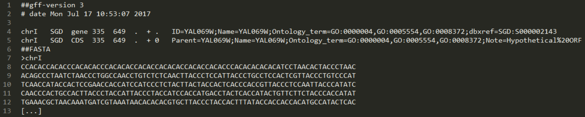

In GFF3 files every line represents one genomic feature with nine tab-delimited fields, whereas unlimited key-value pairs can be stored in field 9.
It is possible to link multiple features to genomic units using the 'Parent tag'.
In the following you can see a GFF file example (modified version of saccharomyces_cerevisiae.gff):

Directives (marked with "##[...]") provide additional information like the gff-version which has to be the first line of each file ("##gff-version 3[...]").
Comment lines have to start with a single "#[...]". It is possible that sequences in FastA format are attached at the end of the file. This has to be announced by a "##FASTA" directive line.
For further information visit GFF3-Specifications.
To read in a gff you have to insert a filepath and optionally a FastA converter. For further information about FastA check the FastA section
or visit API Reference - FastA.
1:
2:
3:
4:
5:
6:
7:
8:
|
open BioFSharp.IO
//path of the input file
let filepathGFF = (__SOURCE_DIRECTORY__ + "/data/gff3Example.gff")
//reads from file to seq of GFFLines
//If no FASTA Sequence is included you directly can use GFF3.fromFileWithoutFasta [filepathGFF].
let features = GFF3.fromFile BioFSharp.BioArray.ofNucleotideString filepathGFF
|
The GFF3SanityCheck prints wether your GFF3 file is valid or not. It returns all specified errors including the lines in which they occured.
In contrast to GFF2 the field 3 (type, feature or method) of a GFF3 entry is restricted to terms defined by the sequence ontology (SO) so this validator is able to check if the entry is a valid SO term.
You can find new versions of the SO at (https://sourceforge.net/projects/song/files/SO_Feature_Annotation).
1:
2:
3:
4:
5:
6:
7:
8:
|
//to validate the GFF file without SOTerm verification use this function and only insert the filepath
let featuresSanityCheck = GFF3.sanityCheck filepathGFF
//path, name and version of the 'Sequence Ontology terms'-file
let filepathSO_Terms = (__SOURCE_DIRECTORY__ + "/data/Sequence_Ontology_Terms_2_5_3.txt")
//to validate the gff file insert filepath
let featuresSanityCheckWithSOTerm = GFF3.sanityCheckWithSOTerm filepathSO_Terms filepathGFF
|
You also can do a simple search for "Parent - child of" relationships giving back all genomic features which contain the searchterm in ID/Id or Parent field.
1:
2:
3:
4:
5:
|
///Term to search for:
let searchterm = "YAL069W"
///with this function you can search features which are related to the searchterm
let gffExampleSearch = GFF3.relationshipSearch features searchterm
|
In order to write a sequence of (GFFLine<_>) into a file use the following function.
If FastA sequences are included they are appended by a FastA writer described in the API Reference - FastA.
Note: The order of key value pairs in field 9 (attributes) may be changed.
1:
2:
|
///Takes a seq<GFF<'a>>, a FASTA converter and a destination filepath and writes it into a .gff. Hint: Use converter = id if no FastA sequence is included.
let gffExampleWrite = GFF3.write features BioItem.symbol (__SOURCE_DIRECTORY__ + "/data/gffExampleWrite.gff")
|
If a FastA file is included you can look up the sequence of a CDS feature using the following function.
1:
2:
3:
4:
5:
6:
7:
8:
9:
10:
11:
12:
13:
14:
15:
16:
17:
18:
19:
20:
|
let firstCDS =
//get GFFEntries
let filteredGFFEntries =
features
|> Seq.choose (fun x ->
match x with
| GFF3.GFFEntryLine x -> Some x
| _ -> None)
//get all CDS features
let filteredCDSFeatures =
filteredGFFEntries
|> Seq.filter (fun x -> x.Feature = "CDS")
filteredCDSFeatures |> Seq.head
let firstCDSSequence = GFF3.getSequence features firstCDS
//Output: Nucleotides.Nucleotides [] (ATG...TAA)
|
namespace BioFSharp
Multiple items
namespace FSharp
--------------------
namespace Microsoft.FSharp
namespace FSharp.Care
namespace BioFSharp.IO
val filepathGFF : string
Full name: GFF3.filepathGFF
val features : seq<GFF3.GFFLine<BioArray.BioArray<Nucleotides.Nucleotide>>>
Full name: GFF3.features
module GFF3
from BioFSharp.IO
val fromFile : fastAconverter:(seq<char> -> 'a) -> filepath:string -> seq<GFF3.GFFLine<'a>>
Full name: BioFSharp.IO.GFF3.fromFile
module BioArray
from BioFSharp
val ofNucleotideString : s:#seq<char> -> BioArray.BioArray<Nucleotides.Nucleotide>
Full name: BioFSharp.BioArray.ofNucleotideString
val featuresSanityCheck : unit
Full name: GFF3.featuresSanityCheck
val sanityCheck : filepath:string -> unit
Full name: BioFSharp.IO.GFF3.sanityCheck
val filepathSO_Terms : string
Full name: GFF3.filepathSO_Terms
val featuresSanityCheckWithSOTerm : unit
Full name: GFF3.featuresSanityCheckWithSOTerm
val sanityCheckWithSOTerm : so_TermsPath:string -> filepath:string -> unit
Full name: BioFSharp.IO.GFF3.sanityCheckWithSOTerm
val searchterm : string
Full name: GFF3.searchterm
Term to search for:
val gffExampleSearch : seq<GFF3.GFFEntry>
Full name: GFF3.gffExampleSearch
with this function you can search features which are related to the searchterm
val relationshipSearch : gffList:seq<GFF3.GFFLine<'a>> -> searchterm:string -> seq<GFF3.GFFEntry>
Full name: BioFSharp.IO.GFF3.relationshipSearch
val gffExampleWrite : unit
Full name: GFF3.gffExampleWrite
Takes a seq<GFF<'a>>, a FASTA converter and a destination filepath and writes it into a .gff. Hint: Use converter = id if no FastA sequence is included.
val write : input:seq<GFF3.GFFLine<#seq<'a0>>> -> converter:('a0 -> char) -> path:string -> unit
Full name: BioFSharp.IO.GFF3.write
module BioItem
from BioFSharp
val symbol : bItem:#IBioItem -> char
Full name: BioFSharp.BioItem.symbol
val firstCDS : GFF3.GFFEntry
Full name: GFF3.firstCDS
val filteredGFFEntries : seq<GFF3.GFFEntry>
Multiple items
module Seq
from FSharp.Care
--------------------
module Seq
from Microsoft.FSharp.Collections
val choose : chooser:('T -> 'U option) -> source:seq<'T> -> seq<'U>
Full name: Microsoft.FSharp.Collections.Seq.choose
val x : GFF3.GFFLine<BioArray.BioArray<Nucleotides.Nucleotide>>
union case GFF3.GFFLine.GFFEntryLine: GFF3.GFFEntry -> GFF3.GFFLine<'a>
val x : GFF3.GFFEntry
union case Option.Some: Value: 'T -> Option<'T>
union case Option.None: Option<'T>
val filteredCDSFeatures : seq<GFF3.GFFEntry>
val filter : predicate:('T -> bool) -> source:seq<'T> -> seq<'T>
Full name: Microsoft.FSharp.Collections.Seq.filter
GFF3.GFFEntry.Feature: string
val head : source:seq<'T> -> 'T
Full name: Microsoft.FSharp.Collections.Seq.head
val firstCDSSequence : seq<Nucleotides.Nucleotide>
Full name: GFF3.firstCDSSequence
val getSequence : gFFFile:seq<GFF3.GFFLine<#seq<'a0>>> -> cDSfeature:GFF3.GFFEntry -> seq<'a0>
Full name: BioFSharp.IO.GFF3.getSequence